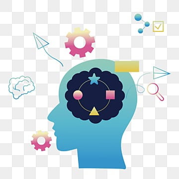
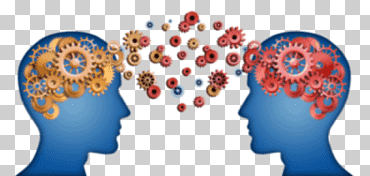
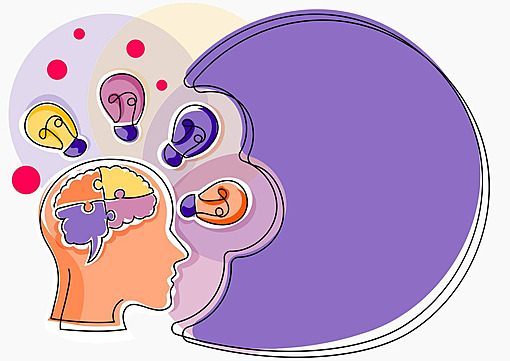
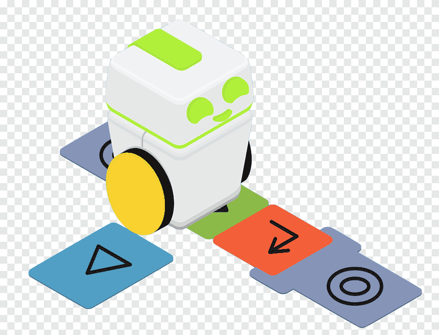

¿Qué es la Lógica?
La lógica es la ciencia del razonamiento. En general, se considera que la lógica tiene su origen en la filosofía y su aplicación en las matemáticas. Sin embargo, se considera a la lógica como una ciencia independiente, en tanto su origen se dio en paralelo al de la filosofía y no como una consecuencia directa de ella (Vela, 2020).
¿Qué son las habilidades del lógico matemáticas?

Es la capacidad de razonar lógicamente, resolver problemas matemáticos y aplicar principios numéricos en diferentes contextos, es la habilidad para identificar patrones, establecer relaciones causa-efecto y desarrollar un pensamiento analítico y crítico . Esta forma de inteligencia no se limita solo a los números, sino que también involucra la habilidad para el razonamiento abstracto, la resolución de problemas lógicos y la comprensión de conceptos complejos (Martinez et al., 2019).
A qué ayudan las habilidades lógico-abstracto en la resolución de Problemas.

Son capacidades cognitivas que permiten analizar, comprender y resolver problemas de manera estructurada y racional. Estas habilidades implican el uso de la lógica para identificar relaciones, patrones y principios en situaciones complejas, así como la capacidad de abstraer los detalles específicos para enfocarse en los conceptos generales y esenciales del problema (Andrade, 2024).
¿Qué es Robótica Educativa?

La robótica educativa es una disciplina que combina robótica, educación, ingeniería, informática y más. Las características que destacan este campo son el trabajo en equipo, la innovación y la aplicación práctica de conceptos teóricos. La robótica educativa se utiliza para facilitar un aprendizaje interactivo y promover habilidades esenciales en los estudiantes (Salazar, 2024).